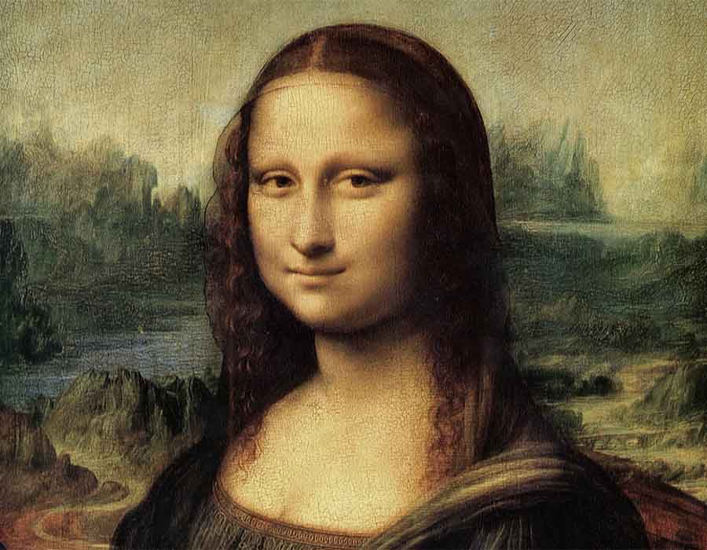
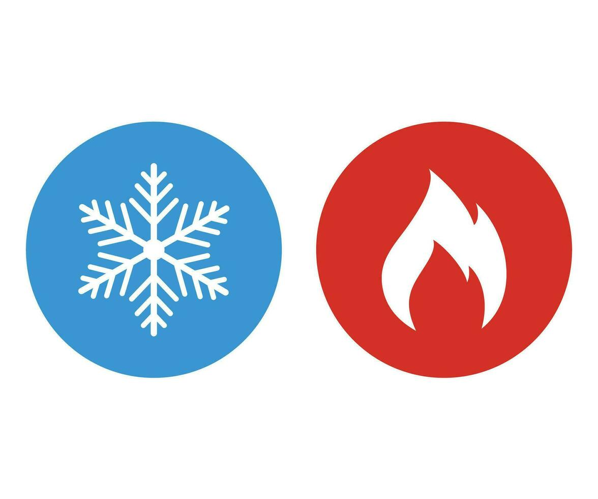
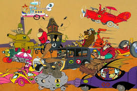

Meus projetos

Projeto do efeito Mona Lisa
Este projeto foi o primeiro projeto feito com os ensinamentos do alura, aonde foi mostrado o poder do codigo do javascrispt e o que ele pode fazer

Quente e Frio
Outro projeto que foi feito junto com o alura, aonde teve uma dinamica divertida de achar o ponto "quente"

Corrida Maluca
Assim como os outros, este projeto foi feito com Javascript também, aonde eu fiz um tipo de corrida que você interage clicando em duas teclas.